Contents
clearvars
close all
Q1
src_img = imread("HW1/Images/Q1.png");
struct_et = [0 1 0;1 1 1;0 1 0];
dilated_img = dilation(src_img,struct_et);
eroded_img = erosion(src_img,struct_et);
figure(1);
subplot(1,2,1);
imshow(src_img);
title("Original Binary Image")
subplot(1,2,2);
imshow(dilated_img);
title("Dilated Binary Image")
figure(2);
subplot(1,2,1);
imshow(src_img);
title("Original Binary Image")
subplot(1,2,2);
imshow(eroded_img);
title("Eroded Binary Image")

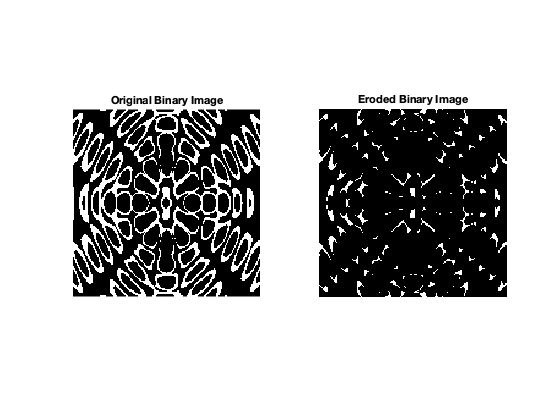
Q2
clearvars
src_img_a = imread("HW1/Images/Q2_a.jpg");
src_img_b = imread("HW1/Images/Q2_b.png");
src_img = src_img_a(:,:,1);
vals_a = custom_histogram(src_img);
src_img = src_img_b(:,:,1);
vals_b = custom_histogram(src_img);
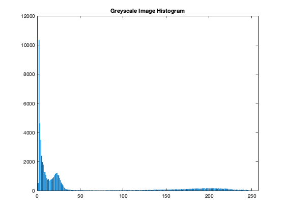 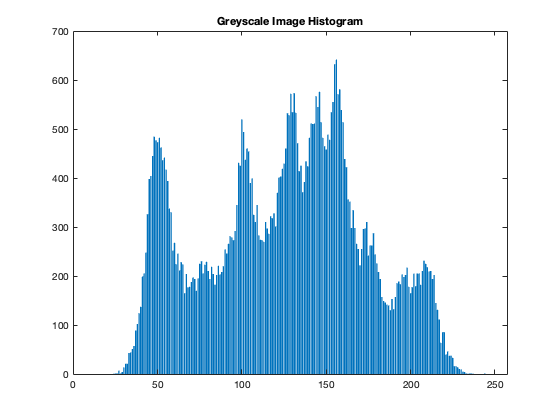
Q3
[out_img_a,vals_new_a] = customHistEq(src_img_a(:,:,1),vals_a);
[out_img_b,vals_new_b] = customHistEq(src_img_b(:,:,1),vals_b);
figure;
subplot(2,2,1)
imshow(src_img_a)
title("Original Image")
subplot(2,2,2)
imshow(out_img_a)
title("Histogram-Equalized Image")
subplot(2,2,3)
bar(vals_a)
title("Original Histogram")
subplot(2,2,4)
bar(vals_new_a)
title("Equalized Histogram")
figure;
subplot(2,2,1)
imshow(src_img_b)
title("Original Image")
subplot(2,2,2)
imshow(out_img_b)
title("Histogram-Equalized Image")
subplot(2,2,3)
bar(vals_b)
title("Original Histogram")
subplot(2,2,4)
bar(vals_new_b)
title("Equalized Histogram")
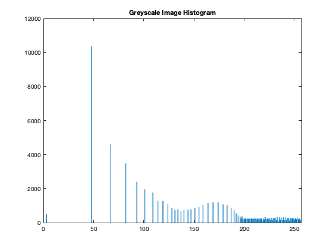 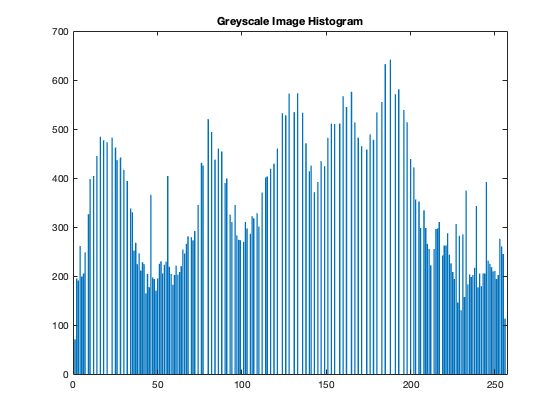 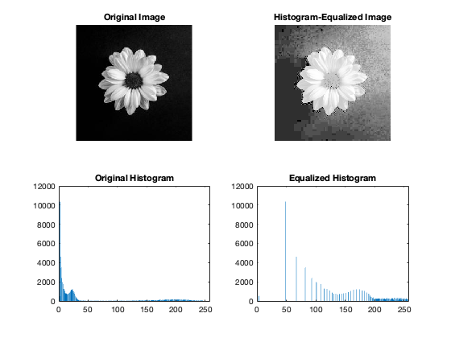

Q4
clearvars
src_img_a = imread("HW1/Images/Q4_a.png");
src_img_b = imread("HW1/Images/Q4_b.png");
out_img_a = otsu_threshold(src_img_a);
out_img_b = otsu_threshold(src_img_b);
figure();
subplot(1,2,1);
imshow(src_img_a);
subplot(1,2,2);
imshow(out_img_a);
figure();
subplot(1,2,1);
imshow(src_img_b);
subplot(1,2,2);
imshow(out_img_b);
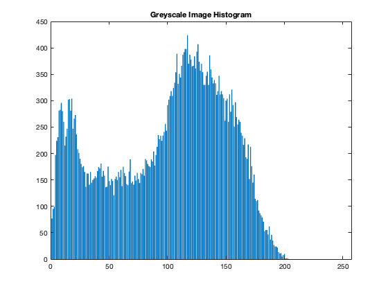 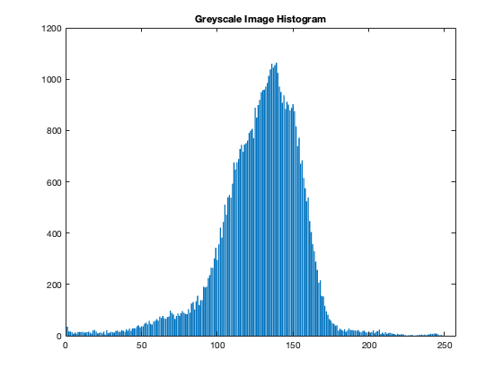 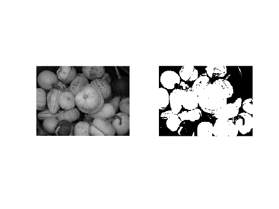 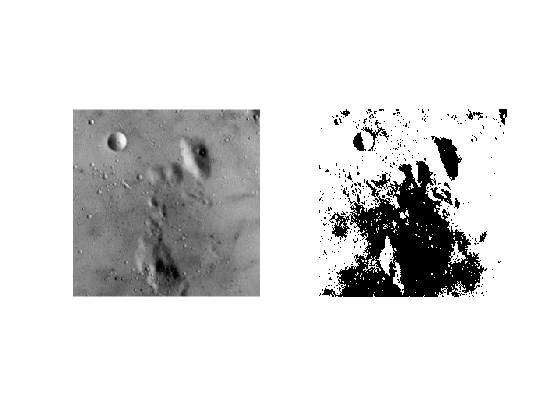
Q5
raw_img = imread("HW/CS448 HW1/HW1/Images/Q5.png");
thresh_img = otsu_threshold(raw_img);
erose_img = erosion(thresh_img,ones(3));
erose_img = erosion(erose_img,ones(3));
erose_img = erosion(erose_img,ones(3));
erose_img = erosion(erose_img,ones(3));
figure();
imshow(raw_img);
figure();
imshow(thresh_img);
figure();
imshow(erose_img);
[labeledImage, numComponents] = connectedComponentAnalysisBFS(erose_img);
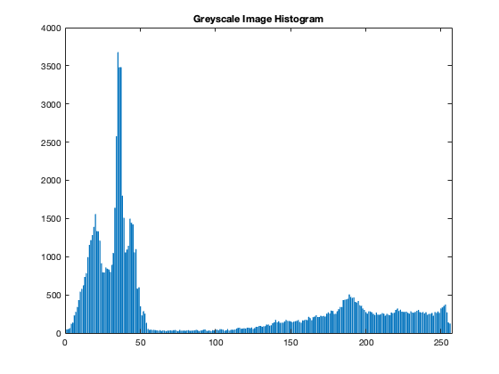 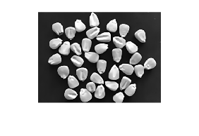 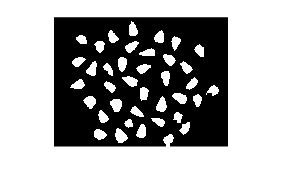 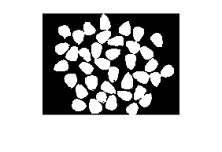
Q6
FUNCTIONS
function dilated_img = dilation(src_img,struct_et)
src_img = src_img(:,:,1) > 0;
struct_et = struct_et == 1;
dum = size(struct_et);
ones_dum = [0 0];
for y = 1:dum(1)
for x = 1:dum(2)
if struct_et(y,x) > 0
ones_dum = vertcat(ones_dum,[y x]);
end
end
end
ones_dum = ones_dum(2:end,:);
size_img = size(src_img);
size_struct = size(struct_et)-1;
len_x = size_img(2) + size_struct(2);
len_y = size_img(1) + size_struct(1);
padded_img = uint8(zeros([len_y , len_x])) == 0;
padded_img(size_struct(1)/2+1:end-size_struct(1)/2,size_struct(2)/2+1:end-size_struct(2)/2) = src_img;
for y = size_struct(1)/2+1:len_x-size_struct(1)/2
for x = size_struct(2)/2+1:len_y-size_struct(2)/2
boolval = 0;
for a = ones_dum'
ny = a(1); nx = a(2);
boolval = boolval | (struct_et(ny,nx) & padded_img(y + (ny-(size_struct(1)/2+1)) , x + nx-(size_struct(2)/2 +1)));
end
dilated_img(y-size_struct(1)/2,x-size_struct(2)/2) = boolval;
end
end
dilated_img = uint8(dilated_img*255);
end
function eroded_img = erosion(src_img,struct_et)
src_img = src_img(:,:,1) > 0;
struct_et = struct_et == 1;
dum = size(struct_et);
ones_dum = [0 0];
for y = 1:dum(1)
for x = 1:dum(2)
if struct_et(y,x) == 1
ones_dum = vertcat(ones_dum,[y x]);
end
end
end
ones_dum = ones_dum(2:end,:);
size_img = size(src_img);
size_struct = size(struct_et)-1;
len_x = size_img(2) + size_struct(2);
len_y = size_img(1) + size_struct(1);
padded_img = uint8(zeros([len_y , len_x])) == 0;
padded_img(size_struct(1)/2+1:end-size_struct(1)/2,size_struct(2)/2+1:end-size_struct(2)/2) = src_img;
for y = size_struct(1)/2+1:len_y-size_struct(1)/2
for x = size_struct(2)/2+1:len_x-size_struct(2)/2
boolval = 1;
for a = ones_dum'
ny = a(1); nx = a(2);
boolval = boolval & (struct_et(ny,nx) & padded_img(y + (ny-(size_struct(1)/2+1)) , x + nx-(size_struct(2)/2 +1)));
end
eroded_img(y-size_struct(1)/2,x-size_struct(2)/2) = boolval;
end
eroded_img = eroded_img * 255;
end
end
function vals = custom_histogram(src_img)
src_img = reshape(src_img.',1,[]);
vals = zeros([1 256]);
for i = 0:255
vals(i+1) = sum(src_img == i);
end
figure;
bar(vals);
title("Greyscale Image Histogram")
end
function [img_eq,vals_new] = customHistEq(img, vals)
cdf = cumsum(vals) / sum(vals);
cdf_norm = round(cdf * 255);
img_eq = zeros(size(img), 'uint8');
for i = 1:256
img_eq(img == i-1) = cdf_norm(i);
end
vals_new = custom_histogram(img_eq);
end
function binary_image = otsu_threshold(source_image)
counts = custom_histogram(source_image);
total = sum(counts);
sum0 = 0;
w0 = 0;
maximum = 0.0;
sum1 = dot((0:255), counts);
for px = 1:256
w0 = w0 + counts(px);
if w0 == 0
continue;
end
w1 = total - w0;
if w1 == 0
break;
end
sum0 = sum0 + (px-1) * counts(px);
m0 = sum0 / w0;
m1 = (sum1 - sum0) / w1;
intervar = w0 * w1 * (m0 - m1)^2;
if ( intervar > maximum )
maximum = intervar;
level = px;
end
end
binary_image = source_image > level;
end
function [labeledImage, numComponents] = connectedComponentAnalysisBFS(binaryImage)
binaryImage = binaryImage > 0;
labeledImage = zeros(size(binaryImage));
numComponents = 0;
[rows, cols] = size(binaryImage);
directions = [-1, 0; 1, 0; 0, -1; 0, 1];
function bfs(startRow, startCol, label)
queue = [startRow, startCol];
while ~isempty(queue)
pixel = queue(1, :);
queue(1, :) = [];
for i = 1:4
newRow = pixel(1) + directions(i, 1);
newCol = pixel(2) + directions(i, 2);
if newRow > 0 && newRow <= rows && newCol > 0 && newCol <= cols ...
&& binaryImage(newRow, newCol) == 1 && labeledImage(newRow, newCol) == 0
labeledImage(newRow, newCol) = label;
queue(end+1, :) = [newRow, newCol];
end
end
end
end
for r = 1:rows
for c = 1:cols
if binaryImage(r, c) == 1 && labeledImage(r, c) == 0
numComponents = numComponents + 1;
labeledImage(r, c) = numComponents;
bfs(r, c, numComponents);
end
end
end
end